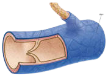

-
Arteries are the blood vessels that carry blood AWAY from the heart, the arteries brings OXYGENATED blood, it is long and elastic. close
-

The veins carry blood back to the heart and it prevnts the blood from flowing backwards. There is two type of veins : vena cava superior (heada and hands) and vena cava inferior (legs and body) close
-
The heart is used to pump blood all aorund our body, the heart pumps around 60-100 beats per minute. The heart has two botton chambers which is the left and right ventricle, the top two chambers are left and right atrium. The atrium expands so blood enters the atrium, then the atrium closes so the blood enters the ventricle. close
-
White blood cells or also know as leukocytes are the main antibodies in our body, it take up less than 1% of our blood content. It is made up of five types : Lympocytes (fights infection), monocytes (cleans dead cells), neutrophils(911, first responder to bacteria), Basophills (asthma reaction) and lastly eochinophils (allergy reactions) close
-
 The red blood cells or also known as eryhrocytes contains hemoglobin which contatains iron. close
The red blood cells or also known as eryhrocytes contains hemoglobin which contatains iron. close -
The thrombocytes has a major role in closing open wounds. close
-
The capillaries are the smallest blood vessels, they connect the arteries to the brain close